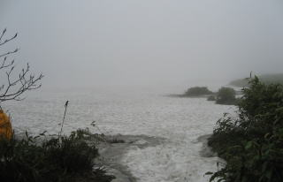
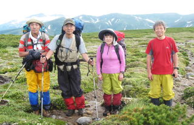

|
|||||||||||||||||||||||||||
|
|||||||||||||||||||||||||||
|
十勝連峰〜トムラウシ縦走 （十勝岳温泉〜沼の原登山口） |
| 実 施 日 | ２００9年7月1日〜5日 | |||
| リーダー | 辻美紀子 ＳＬ．田代正廣 | |||
| 報 告 者 | 小林義亮 徳永泰朗 | |||
| ＨＰ製作者 | 徳永泰朗 | |||
| 参加者数 | 会員5名 | |||
| 例年、この時期は梅雨真っ盛りの本州を避けて北海道の山へ出かけることにしている。今年も東京勢3人に経験豊富な津軽の二人を加え、合計5人のパーティーで出かけた。目的の山はオプタテシケだが、リーダーはそのピークの近くの登山口から取り付く優しいコース選択を避け、十勝連峰を貫いて表大雪の南端、トムラウシ、化雲岳を踏み、五色ヶ原から沼の原登山口までを歩き通すという、距離にして57ｋｍの手強い計画を立てた。 |
| 7月1日 |
| 第1日目、早朝の飛行機で旭川空港に降り立った東京勢三人は、前日に車で到着していた津軽の二人に迎えられ、一路登山口の十勝岳温泉「凌雲閣」に向かった。 |
| 0725羽田空港——0905旭川空港——1010凌雲閣——1045発——1305陵線分岐——1425三峰山——1525上ホロ小屋 |
| A | ||
| 強くて明朗な津軽の衆の笑顔が迎えてくれた |
稜線はガスに包まれ今一つ意気が 上がらないままに5人の揃い踏み |
 |
A | |
| 出発地点の十勝岳温泉が眼下に望める | 稜線に出て三峰山で一休み |
| A | ||
| 残雪が多く花には早かったが、それでもツガザクラやシャクナゲなどが 登山道の両脇に咲き広がっている |
||
| 7月2日 |
| 山に入って2日目はとてもつらい。けれども今日はどんなにゆっくり歩いても昼ごろには今夜の泊まりの小屋に着いてしまうのだ。 |
| 0710発——十勝岳0815——美瑛岳1045——1230美瑛富士避難小屋 |
| メンバー全員が何度目かの登頂だった十勝岳 |
ガスに包まれて「ワォオーン」と反響しそうな 爆裂火口 |
| A | ||
| 四方からワイヤーで固定された 美瑛富士避難小屋 冬は解体するのかな |
雪解けの流れで水を汲む |
 |
| 1日目、2日目、二日分のＧＰＳ軌跡 ＧＰＳデータ 小林義亮 |
| 7月3日 |
| 今日はリーダーの計画によれば12時間半の行程である。幾張張れるか不明なテント場に場所を確保しなければならない。標高差６００ｍの下りをはじめ、いくつものピークを越える起伏の連なりでもある。気持ちが張り詰めた1日であった。そして意地悪な天候に翻弄された１日でもあった。 |
| 0455発——０７３０オプタテシケ——１１４０コスマヌプリ——１５４０三川台幕営場 |
| A |  | |
| 日本三百名山、オプタテシケ山頂 Ｔ女は294/300、そしてＫ氏は295/300 |
雪渓がガスの彼方へ海のように拡がる 登山道の続きを探すのにＧＰＳが活躍した |
| A | ||
| ツリガネ山に立った頃からガスが取れ出した |
そして、幕営場からはトムラウシの岩峰が くっきりと聳え立った |
| A | ||
| 一日の努力は報われた テント場は3人用テント２張でいっぱい |
天候回復は何よりの肴だ 深い満足感の中で美酒をふくむ |
| 3日目のＧＰＳ軌跡 |
| 7月7月4日日 |
| 今日は昨日の試練のお釣りをもらう日だったのかな。回復した空のもと天井漫歩。撮影タイムが多すぎて前に進めない。好天が昨日でなくてよかった。 |
| 0650発——0725三川台稜線——1010トムラウシ——1315ヒサゴ沼避難小屋 |
| A |  | |
| 今回の山旅で初めての朝焼け、 しかし笠雲がかかっている |
広い広い三川台に出た |
| A | ||
| 昨夜のテント場の背後には 昨日立ったオプタテシケが、そして来し方が・・・・ |
真ん中二人は旭川の気持ちのいい岳人たち 挨拶が良かった、水を貰えたのも良かった |
| A | ||
| トムラウシの頂。ＨＰ制作者は17年前の縦走と 合わせ十勝、大雪連峰のトレースが繋がったと喜ぶ |
ヒサゴ沼の畔に佇む避難小屋 |
|
| 4日目のＧＰＳ軌跡 |
| 7月５日 |
| 前日の夕方には雷鳴がとどろき、ものすごい降雨があった。その直前には20人の募集ツアー団体客が到着して定員40人の避難小屋は一挙に満員となった。 |
| 0635発——0750化雲岳——1240石狩分岐——1345沼の原登山口 |
| A | ||
| 朝、スプーンカットの雪渓を踏んで登り返す |
下山の日、化雲岳の山頂で みんなの表情も明るいです |
 |
A | |
| ウルップ草やエゾ小桜が楽しませてくれました |
原なのに身の丈以上の藪に悩まされるとは・・・ 五色ヶ原にてぼやく |
| A | ||
| 美しい池塘の楽園、沼の原湿原 彼方にはたどってきた五色ヶ原が・・・・ |
石狩分岐、いよいよ幕が下りる ここからはひたすら沼の原登山口へ降るのみ |
| A | ||
| 中身の減ったザックではありますが、 車まであとどれくらいなのよと言いたくなる |
こみ上げる達成感のもと、カンパーイ! 長丁場だったのに対立することもなく いいパーティーでした |
| 5日目のＧＰＳ軌跡 |
| 沼の原の下山口には十勝岳温泉に駐車しておいた津軽衆の愛車が回送されて待っていた。疲れた足にはこの措置は何よりもありがたかった。これ等たくさんの事前情報を集め、安全で快適な山行を組んでくれた辻リーダーに感謝である。併せて車を提供しずーっと運転してくれた清野会員に感謝する。 |
| 追悼 このページをアップしましたあと、私たちの山行から10日ほど経過しました7月16日に トムラウシ山及び美瑛岳に於いて11人の登山者の方々がお亡くなりになりました。 謹んでご冥福をお祈り申し上げます。 |